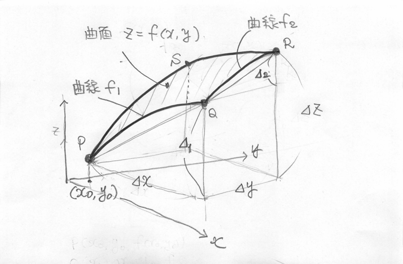

微分ゼミ 3回目 (2017.10.26)
1 微分とは
1.1 前回の質問
下記のような質問がありました。
- \(dx\)って何ですか？
- 偏微分って何ですか？
- 平均値の定理は，何を意味していて，何故重要なのですか？
- 全微分は何を求めているのですか？
- 曲線 \(f_1\) の求め方は？
自分は理解できているか，確認してみてください。
先生の答えや考えは，今日のプリントの中に書かれているはずです。
1.2 前回のまとめのまとめ
今回は，ベクトルを使って微分の本質を説明してみます。
以下，\(\vec{e_x}\), \(\vec{e_y}\), \(\vec{e_x}\) は \(x\)と\(y\)と \(z\)方向の単位ベクトルとします。
\(\Delta x\), \(\Delta y\), \(\Delta z\) は \(x\)と\(y\)と\(z\)方向の変化量とします。
\(dx\)，\(dy\)， \(dz\) は，\(dx = \lim_{\Delta x \rightarrow 0} \Delta x \), \(dy = \lim_{\Delta y\rightarrow 0} \Delta y \), \(dz = \lim_{\Delta z \rightarrow 0} \Delta z \) で定められる0に近づい ていく微小変化量を表わします。
\(dx\)，\(dy\)， \(dz\) は，それだけで考えると，ゼロとみなせる微小 量ですが，\(y=f(x)\) や \(z=f(x,y)\) などの関係があると， \(dy\) と\(dx\)，\(dz\) と \(dx\) と\(dy\) の間にも成り立つ関係式 があり，それが微分係数だったり，導関数だったり，全微分の式だったり します。
1.2.1 関数の変化と微分 (1変数関数)
- ベクトル \(\vec{PQ}\) を考えます。
\(\vec{PQ}\) は下記のように表わせます:
\begin{eqnarray}
\vec{PQ} &=& \Delta x \vec{e_x} + \Delta y \vec{e_y} \\
& = & \Delta x\, \vec{e_x} + ({f(x_0+\Delta x) - f(x_0)}) \vec{e_y} \\
& = & \Delta x\, \vec{e_x} + \left(\frac{f(x_0+\Delta x) - f(x_0)}{\Delta x}\right){\Delta x} \vec{e_y}
\end{eqnarray}
途中，変化量(\(f(x_0+\Delta x) - f(x_0)\)) を
平均変化率 (\(\frac{f(x_0+\Delta x) - f(x_0)}{\Delta x}\)) と変位\((\Delta x)\) の積で表わしています。 - \(P\rightarrow Q\) の極限を考えると以下になります: \begin{eqnarray} \lim_{Q \rightarrow P} \vec{PQ} & = & \lim_{\Delta x \rightarrow 0} \left(\Delta x \vec{e_x} + \Delta y \vec{e_y}\right) \\ & = & \lim_{\Delta x \rightarrow 0}\left(\Delta_x \vec{e_x} + (f(x_0+\Delta x) - f(x_0))\vec{e_y} \right)\\ & = & \lim_{\Delta x \rightarrow 0}\left(\Delta_x \vec{e_x} + \frac{f(x_0+\Delta x) - f(x_0)}{\Delta x} {\Delta x}\,\vec{e_y} \right)\\ & = & dx \, \vec{e_x} + f'(x) dx \vec{e_y}\\ & = & dx \, \vec{e_x} + dy \vec{e_y}\\ \end{eqnarray}
- \(\lim_{Q\rightarrow P}\vec{PQ}\) の \(\vec{e_y}\)成分に注目すると \( dy = f'(x_0) dx \) が導かれます。
- つまり，\( dx \) も \( dy \) も 0 に近づいていきますが， \(y = f(x) \)という関係があるため， 点P\((x_0，y_0)\)において，\( dy \) は \( dx \) に比べて， \(f'(x_0)\) 倍で 0 に近づいていくことになります。
1.2.2 2変数関数の変化と微分

- 曲線 \(f_1\)の変化量 \(\Delta_{1}\)， 曲線 \(f_2\)の変化量\(\Delta_{2}\) を表わす式。
- \(\Delta_{1} = f(x_0+\Delta{x},y_0) - f(x_0,y_0) \)
- \(\Delta_{2} = f(x_0+\Delta{x},y_0+\Delta{y}) - f(x_0+\Delta{x},y_0) \)
極限を取ると偏微分係数になります:
- \(\lim_{\stackrel{\Delta{x} \rightarrow 0}{\Delta{y} \rightarrow 0}} \Delta{1} = f_y(x_0,y_0)dx \)
- \(\lim_{\stackrel{\Delta{x} \rightarrow 0}{\Delta{y} \rightarrow 0}} \Delta{2} = f_y(x_0,y_0)dy \)
- ベクトル \(\vec{PR}\) を考えます。
\(z = f(x, y)\) という関係があるので， \(x\) と \(y\) は独立に動け ますが，\(z=z(x,y)\)です。
\(\vec{PR}\) は下記のように表わせます:
2 平均値の定理からテイラーの定理へ
2.1 平均値の定理の意味
\([a, b]\) で微分可能な関数 \(f(x)\) に対する，平均値の定理は次のように 解釈できると考えます。
読んで自分で考え，納得できれば自分の言葉でまとめてください.
- 区間 \([a,b]\) の間に，接線の傾きが平均変化率となる点 c が存在する。
\begin{eqnarray}
f(b) - f(a) & = & f'(c)\,(b-a), & a< c
- 上式の\(b\rightarrow a\)の極限が，\(dy=f'(x)dx\)となる。
- 両辺を \((b-a)\)で割り，\(b\rightarrow a\)の極限が，\(dy/dx = f'(x) \)となる。
- \(f(a)\)の値から，\(f(b)\)の値を正確に計算できる。
\begin{eqnarray}
f(b) &=& f(a) + f'(c)\,(b-a), & a< c < b \\
\end{eqnarray}
但し，\(c\)の値がわからないと\(f(b)\)の値は正確に求められないが，
近似を用いながら，だんだんに \(f(b)\)を求めていくことができる。\ \(\sqrt{10}\)の計算や次節のやり方などがその例。
2.2 平均値の定理を繰り返す
\(h = b -a\) とし，\(c\) の代わりに，\(c = a + \theta_1 h\) と書き変 え，平均値の定理を下記のように書く。繰り返すごとに新しい\(\theta\) がでてくるので，添字を付ける。
\begin{eqnarray} f(b) &=& f(a) + f'(a+\theta_1 h) h, & 0<\theta_1<1 \\ & & & h=(b-a) \end{eqnarray}- 上式を，\(a\) から \(h\) だけ離れた \(b\) での \(f(b) \) を求める式と考える。 \\
- \(f(x)\) の導関数と，\(f(a)\) と， \(f'(a+\theta_1 h)\) が分れば，\(f(b)\) が求められる。 \\
- しかし，\(\theta_1\)が分らないため，\(f'(a+\theta_1 h)\) が求められない。 \\
そこで，\(f'(a+\theta_1 h)\)に，平均値の定理を適用し，\(f'(a)\)を使って， 表してみよう。
次の式 (の\(\cdots\)の部分) を自分で導いてみてください。
\begin{eqnarray} f'(a+\theta_1 h) & = & f'(a) + \cdots \end{eqnarray}\(f^{(2)}(a+\theta_1\theta_2 h)\) についても，平均値の定理を適用し， \(f^{(2)}(a)\)を使って，計算式を導いてみよう。
\(f^{(n)}(a+\theta_1\theta_2\cdots\theta_{n} h)\) についても，平均値の定理を適用し， \(f^{(n)}(a)\)を使って，計算式を導いてみよう。
結局，\(f(b)\) の計算式はどうなる？ \\ テイラーの定理みたいのが導けましたか？ \\